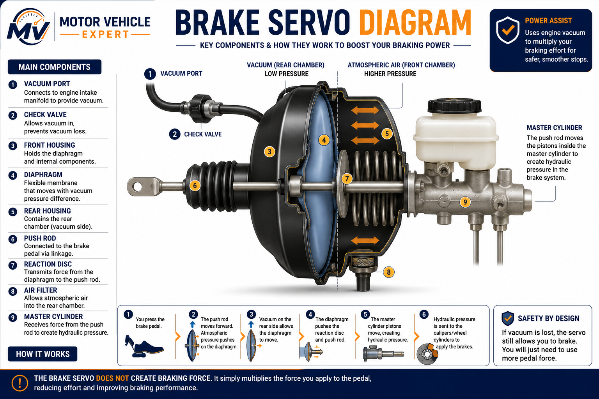
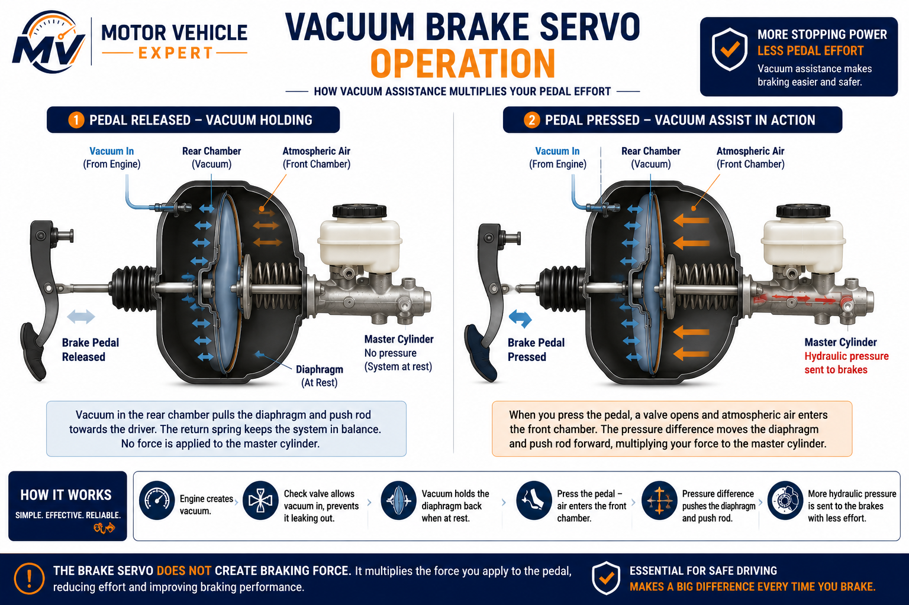
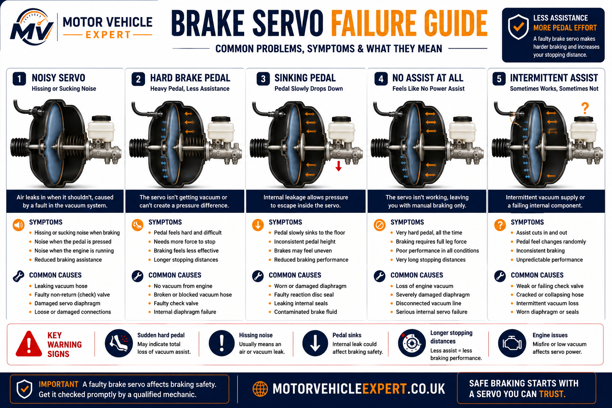
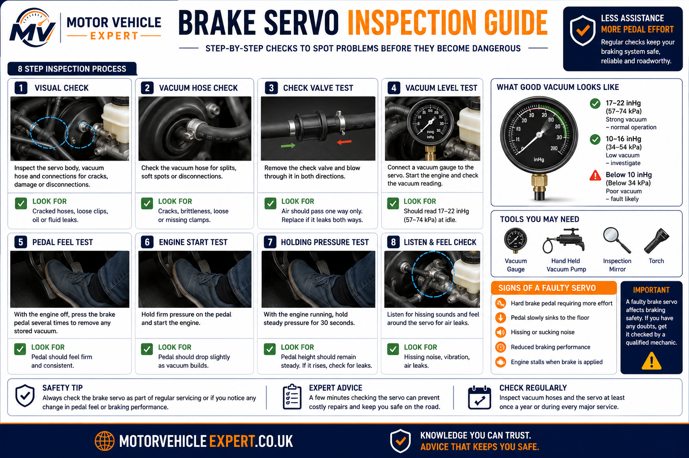

What is a brake servo?
A brake servo is the brake assistance unit fitted between the brake pedal and the brake master cylinder. Its job is to multiply the driver's pedal effort using vacuum assistance, making the brake pedal easier to press while still allowing the hydraulic braking system to generate strong braking force.
The brake servo does not replace the hydraulic system. Instead, it works before the hydraulic pressure stage. When the driver presses the pedal, the servo boosts the input force sent into the master cylinder. The master cylinder then pushes brake fluid through the brake pipes and brake hoses so the brake calipers can apply the brakes at the wheels.
What does it do?
Multiplies pedal effort so the driver can generate strong braking force without excessive leg pressure.
Where is it fitted?
Usually mounted on the engine bay bulkhead, directly behind the brake master cylinder.
What is urgent?
A hard brake pedal, hissing noise, vacuum leak or sudden loss of assistance should be inspected immediately.
A failed brake servo often feels very different from a failed master cylinder. Servo faults usually create a hard pedal with poor assistance, while master cylinder faults more often cause a sinking or soft pedal. Correct diagnosis matters because both faults affect braking in different ways.
What Is A Brake Servo?
A brake servo is a large round assistance unit fitted behind the brake master cylinder. On most vehicles it uses vacuum pressure to reduce the amount of physical effort needed at the brake pedal. When the driver presses the pedal, the servo uses a pressure difference across an internal diaphragm to help push the master cylinder input rod forward.
This assistance is important because the hydraulic braking system requires significant force to create strong stopping power. Without servo assistance, the brake master cylinder can still create pressure, but the driver would need to press the pedal much harder to achieve the same braking effect.
Petrol engines often provide vacuum from the inlet manifold, while many diesel engines use a separate vacuum pump because they do not naturally produce the same intake vacuum. Some modern vehicles, hybrids and electric vehicles may use electric vacuum pumps or alternative brake assistance systems, but the principle remains the same: reduce pedal effort while maintaining controlled braking.
Vacuum Chamber
Uses pressure difference to help move the servo diaphragm and pushrod during braking.
Internal Diaphragm
Moves inside the servo housing when atmospheric pressure and vacuum are controlled by the valve.
One-Way Valve
Helps retain vacuum in the servo so assistance remains available during normal braking.
The brake servo makes modern braking feel light, controlled and predictable. When assistance is lost, the brakes may still operate, but the pedal can become extremely hard and stopping the vehicle may require much more effort than the driver expects.
Brake Servo Diagram
The brake servo sits between the brake pedal linkage and the master cylinder. It contains a sealed housing, diaphragm, return spring, pushrod, control valve and vacuum connection. These parts work together to boost the force applied to the master cylinder without changing the driver's basic pedal input.

The exact layout varies between vehicles, but most vacuum brake servos use the same core principle: vacuum on one side of the diaphragm and controlled atmospheric pressure on the other side to assist pedal force.
Servo Housing
The large sealed casing that contains the diaphragm, spring and vacuum chambers.
Diaphragm
A flexible internal membrane that moves when pressure changes inside the servo.
Pushrod
Transfers assisted force from the servo into the brake master cylinder.
Vacuum Hose
Connects the servo to the engine vacuum source or vacuum pump.
Check Valve
Allows vacuum to enter the servo while helping prevent vacuum loss when the engine is switched off.
Return Spring
Helps return the diaphragm and pushrod to the rest position after braking.
A brake servo fault is not always inside the servo itself. Split vacuum hoses, loose connections, faulty check valves or weak vacuum pumps can all cause poor assistance and a hard brake pedal.
How A Brake Servo Works
When the engine is running, vacuum is supplied to the brake servo through a vacuum hose and one-way check valve. With the brake pedal released, vacuum is usually present on both sides of the servo diaphragm. Because pressure is balanced, the diaphragm stays in its rest position and the brakes remain released.
When the driver presses the brake pedal, a control valve inside the servo allows atmospheric pressure into one side of the chamber while vacuum remains on the other side. This pressure difference pushes the diaphragm forward, adding assistance to the driver's pedal force. The boosted force is then transferred through the pushrod into the brake master cylinder.
The master cylinder then converts this assisted mechanical force into hydraulic pressure. That pressure travels through the brake fluid, brake pipes and flexible hoses before reaching the calipers or wheel cylinders. The brake servo therefore works before the hydraulic stage, helping the driver apply enough force to operate the complete braking system comfortably.
Step 1
Vacuum StoredThe engine or vacuum pump supplies vacuum to the brake servo through a one-way valve.
Step 2
Pedal PressedThe pedal opens the servo control valve and changes pressure inside the booster chamber.
Step 3
Diaphragm MovesPressure difference across the diaphragm creates an assisting force.
Step 4
Force BoostedThe servo adds assistance to the driver's pedal input through the pushrod.
Step 5
Master Cylinder OperatesThe assisted force pushes the master cylinder piston assembly forward.
Step 6
Brakes ApplyHydraulic pressure reaches the braking components at the wheels.
With servo assistance lost, the hydraulic braking system may still operate, but the pedal can require much more force. This can surprise drivers and increase stopping distances, especially during emergency braking.
Vacuum Brake Servo Operation Explained
The brake servo relies on vacuum rather than hydraulic pressure to provide brake assistance. While the brake master cylinder generates hydraulic pressure, the servo's job is to increase the mechanical force applied to that master cylinder. This allows drivers to achieve powerful braking with far less pedal effort than would otherwise be required.
On most petrol vehicles, vacuum is created naturally inside the engine inlet manifold whenever the engine is running. Diesel engines produce much less manifold vacuum, so many diesel vehicles use a dedicated mechanical or electric vacuum pump. Hybrid and electric vehicles often rely on electric vacuum pumps because their engines may not run continuously enough to maintain reliable brake assistance.
A one-way check valve fitted in the vacuum hose helps trap vacuum inside the servo when engine vacuum temporarily drops. This allows the driver to retain braking assistance during acceleration, hill climbing or immediately after switching the engine off.

During normal braking, atmospheric pressure is introduced to one side of the diaphragm while vacuum remains on the opposite side. This pressure difference creates the assisting force that helps move the master cylinder.
Petrol Engines
Most petrol engines generate sufficient inlet manifold vacuum to operate the brake servo without an additional pump.
Diesel Engines
Because diesel engines produce very little manifold vacuum, they normally use a dedicated vacuum pump.
Hybrid & EVs
Many hybrid and electric vehicles use electric vacuum pumps or electronic brake assist systems to provide consistent braking assistance.
Check Valve
Prevents vacuum escaping back towards the engine and allows limited brake assistance if the engine stalls.
Vacuum Hose
Any split, loose connection or collapsed hose can significantly reduce servo performance.
Diaphragm Movement
Pressure difference across the diaphragm produces the additional force needed to assist braking.
Drivers often assume the brake servo creates braking power. In reality, it only increases the driver's pedal force. The actual braking pressure is still generated by the brake master cylinder and transmitted through the hydraulic braking system.
Common Brake Servo Problems
Brake servos are extremely reliable and often last the lifetime of the vehicle, but they operate continuously whenever the brakes are used. Over many years, internal diaphragms, control valves, vacuum hoses and check valves can deteriorate through age, heat, vibration and contamination. When this happens, the amount of brake assistance gradually reduces, making the vehicle harder to stop comfortably.
Because the brake servo works together with the vacuum supply, master cylinder and hydraulic braking system, diagnosing faults requires a complete inspection rather than replacing parts based on one symptom alone. A hard brake pedal, for example, may be caused by the servo itself, a leaking vacuum hose, a failed check valve or a faulty vacuum pump.
Vacuum Leak
Split vacuum hoses or leaking servo seals reduce vacuum assistance and create a noticeably harder brake pedal.
Failed Diaphragm
A damaged diaphragm prevents the servo from multiplying pedal force correctly and usually requires complete replacement.
Faulty Check Valve
A worn one-way valve allows vacuum to escape, reducing brake assistance after the engine is switched off.
Vacuum Pump Failure
A failed vacuum pump on diesel or hybrid vehicles can remove brake assistance even though the servo itself remains serviceable.
Internal Valve Wear
Worn internal control valves may delay brake assistance or create inconsistent pedal feel during braking.
Brake Fluid Contamination
A leaking master cylinder can allow brake fluid to enter the servo, damaging internal components and shortening its service life.
Never replace a brake servo before confirming the vacuum supply is working correctly. Professional diagnosis includes checking the vacuum hose, one-way valve, vacuum pump output and brake master cylinder before condemning the servo itself.
Brake Servo Failure Guide
Brake servo failures usually develop gradually, although vacuum hose damage or internal diaphragm failure can cause brake assistance to reduce suddenly. Unlike faults within the hydraulic braking system, a brake servo problem normally causes the brake pedal to become noticeably harder rather than softer. Drivers often describe the vehicle as requiring far more leg pressure to stop, particularly during emergency braking or repeated braking at higher speeds.

Because the brake servo depends on engine vacuum, failures may originate outside the servo itself. Split vacuum hoses, damaged one-way valves or weak vacuum pumps can all reduce braking assistance while leaving the servo mechanically undamaged. Correct diagnosis therefore requires inspection of the complete vacuum system before replacing expensive components.
Hard Brake Pedal
A significant increase in pedal effort usually indicates reduced vacuum assistance or complete brake servo failure.
Hissing Noise
Air leaking past the diaphragm or internal control valve often produces a noticeable hissing sound while the brake pedal is pressed.
Poor Brake Assistance
The brakes still operate hydraulically, but considerably more pedal force is required to slow or stop the vehicle.
Vacuum Hose Damage
Cracked, loose or collapsed vacuum hoses reduce vacuum supply and may mimic complete servo failure.
Failed Vacuum Pump
Diesel engines often rely on mechanical or electric vacuum pumps. Pump failure removes brake assistance even if the servo remains serviceable.
Brake Fluid In Servo
A leaking master cylinder can allow brake fluid to enter the servo housing, damaging the diaphragm and internal valve assembly.
A hard brake pedal does not automatically mean the brake servo has failed. Professional diagnosis should always include checking engine vacuum, the vacuum pump, one-way check valve, vacuum hoses and the brake master cylinder before replacing the servo itself.
Brake Servo Inspection Guide
Diagnosing a brake servo begins with confirming that the braking system is hydraulically sound before testing vacuum assistance. A technician will inspect the servo, vacuum hose, check valve, master cylinder, brake fluid level and vacuum supply while also assessing brake pedal feel under different operating conditions. This systematic approach helps distinguish genuine servo failure from faults elsewhere in the braking system.

Many brake servo faults are confirmed through simple functional tests. One common workshop procedure involves pressing the brake pedal several times with the engine switched off before starting the engine while maintaining pedal pressure. If the servo is operating correctly, the pedal should move slightly downward as vacuum assistance becomes available.
Brake Pedal Test
Confirms whether vacuum assistance is operating correctly when the engine starts.
Vacuum Hose Inspection
Checks for cracked rubber hoses, loose clips, collapsed sections and poor sealing.
Check Valve Test
Ensures the one-way valve retains vacuum after the engine is switched off.
Vacuum Pump Output
Measures whether sufficient vacuum is reaching the brake servo during engine operation.
Master Cylinder Check
Looks for brake fluid leaks that may damage the brake servo or indicate hydraulic faults.
Road Test
Confirms normal pedal feel, consistent brake assistance and predictable braking performance after repairs.
Replacing a brake servo without confirming the condition of the vacuum system can lead to unnecessary repair costs. A complete inspection of the vacuum supply, master cylinder and hydraulic braking system should always be carried out before major braking components are replaced.
Can A Brake Servo Be Repaired Or Must It Be Replaced?
Whether a brake servo can be repaired depends on the type of fault, the vehicle design and which part of the vacuum assistance system has failed. In many cases, the brake servo itself is replaced as a complete assembly because it is a sealed safety-critical component. However, not every loss of brake assistance means the servo has failed. Vacuum hoses, one-way check valves, vacuum pumps and even leaking brake master cylinders can all produce similar symptoms while the servo remains perfectly serviceable.
Professional diagnosis is therefore essential before replacing expensive braking components. A technician will normally test the vacuum supply, inspect the hose connections, examine the one-way valve, check vacuum pump performance and confirm the brake master cylinder is not leaking internally before condemning the brake servo. This systematic approach avoids replacing parts unnecessarily and ensures the true cause of the problem is identified.
Older vehicles occasionally used brake servos that could be dismantled for specialist repair, but modern units are generally sealed. Internal diaphragms, reaction valves and control mechanisms are manufactured to precise tolerances, making complete replacement the safest and most reliable solution if the servo itself has failed. Replacement also restores factory braking characteristics and eliminates concerns about worn internal components.
It is equally important to inspect the brake master cylinder whenever a brake servo is removed. If brake fluid has leaked from the rear of the master cylinder into the servo housing, fitting a new servo without correcting the leaking master cylinder can quickly damage the replacement unit. Likewise, replacing only the master cylinder while ignoring a damaged servo may leave the braking system with poor assistance or inconsistent pedal feel.
Once repairs have been completed, the braking system should be tested thoroughly. Brake pedal feel, vacuum retention, engine vacuum supply, hydraulic pressure and road performance should all be verified before the vehicle returns to normal use. Because the brake servo works alongside the hydraulic braking system rather than replacing it, every repair should consider the complete braking system as a single safety-critical assembly.
Repair May Be Suitable If...
- ✓Only the vacuum hose has deteriorated.
- ✓The one-way check valve has failed.
- ✓The vacuum pump requires replacement.
- ✓The servo itself passes functional testing.
Replacement Is Normally Recommended If...
- ✓The internal diaphragm has failed.
- ✓The servo leaks vacuum internally.
- ✓Brake fluid has contaminated the servo.
- ✓Brake assistance remains poor after vacuum system repairs.
Vacuum Hose
Damaged vacuum hoses are inexpensive compared with replacing the complete brake servo.
Check Valve
A faulty one-way valve can often be replaced without changing the brake servo assembly.
Complete Brake Servo
Most modern vehicles receive a complete replacement servo when internal faults are confirmed.
Master Cylinder
Always inspect the master cylinder for rear seal leaks before installing a replacement brake servo.
Vacuum Pump
Diesel and hybrid vehicles often rely on vacuum pumps that require separate diagnosis and replacement.
Road Test
Every repair should finish with a controlled road test confirming consistent pedal feel and normal brake assistance.
Never replace a brake servo simply because the brake pedal feels hard. Vacuum supply faults, leaking hoses, defective check valves and vacuum pump failures are all common causes of reduced brake assistance. Correct diagnosis protects both your safety and your repair budget.
Brake Servos And The UK MOT Test
Although the brake servo is not dismantled during an MOT inspection, its operation has a direct effect on braking performance. MOT testers assess brake pedal operation, braking efficiency, brake warning lights and the overall condition of the braking system. If the servo fails to provide adequate assistance or contributes to unsafe braking performance, the vehicle may fail the MOT.
Testers also look for obvious hydraulic leaks around the brake master cylinder and servo area. Because leaking brake fluid can damage the brake servo internally, any evidence of fluid contamination should be investigated promptly. In addition, obvious vacuum hose defects, insecure components or brake warning lights may indicate braking problems requiring further inspection.
Pass
Brake assistance operates correctly, pedal feel is normal and braking performance meets MOT standards.
Advisory
Minor vacuum hose deterioration or early signs of braking component wear may be recorded for monitoring.
Fail
Reduced braking efficiency, hydraulic leaks, warning lights or serious braking defects can result in MOT failure.
A brake servo fault may develop long before the MOT test. If braking effort suddenly increases or the brake pedal becomes unusually hard, arrange a professional inspection immediately rather than waiting for your next MOT.
Brake Servo Replacement Costs UK
Brake servo replacement costs vary depending on the vehicle, engine layout, labour time and whether additional components such as the brake master cylinder, vacuum pump or vacuum hoses also require replacement. On many vehicles the brake servo is mounted behind the master cylinder against the bulkhead, making access more time-consuming than replacing many other braking components.
The guide prices below are broad UK estimates intended for budgeting purposes. Actual costs vary depending on vehicle manufacturer, genuine or aftermarket parts, regional labour rates and whether additional brake bleeding or hydraulic repairs are required.
Small Cars
£250–£400Smaller petrol vehicles generally have simpler vacuum systems and lower labour times.
Family Cars & SUVs
£350–£650Most UK vehicles fall within this price range depending on parts quality and labour charges.
Premium Vehicles
£600–£1,000+Luxury, hybrid and performance vehicles often require higher-cost components and additional diagnostic procedures.
Vacuum Hose Replacement
£40–£120Replacing damaged vacuum hoses is often far cheaper than replacing the brake servo itself.
Vacuum Pump
£180–£500+A faulty vacuum pump can produce the same symptoms as servo failure and should always be tested first.
Brake Fluid Bleeding
£60–£140If the master cylinder is removed during replacement, the hydraulic braking system usually requires bleeding.
Ask your garage whether the brake servo has been fully diagnosed before authorising replacement. A damaged vacuum hose or faulty one-way valve can often be repaired for a fraction of the cost of replacing the complete servo assembly.
Used Car Buying Checks
Brake servos usually last for many years, but because they rely on vacuum assistance, faults can develop gradually without immediately affecting normal driving. During a used car inspection, always assess brake pedal feel, engine behaviour during braking and the overall condition of the braking system rather than relying on a visual inspection alone.
A properly functioning brake servo produces smooth, progressive braking with relatively light pedal effort. If the brake pedal feels unusually heavy, the engine idle changes significantly when the brake pedal is pressed or a constant hissing noise is heard around the pedal area, further investigation is recommended before purchasing the vehicle.
Brake Pedal Feel
Excessively hard pedal effort is one of the strongest indicators of brake servo or vacuum system problems.
Listen For Hissing
A continuous hissing sound while pressing the brake pedal may indicate a leaking diaphragm or vacuum connection.
Engine Idle
Significant changes in engine idle when braking can sometimes indicate vacuum leakage within the servo system.
MOT History
Check for repeated braking advisories, hydraulic leaks or braking performance concerns recorded during previous MOT tests.
Brake Fluid Leaks
Inspect around the master cylinder and servo for signs of brake fluid leakage before agreeing to purchase.
Service Records
Evidence of regular brake servicing and brake fluid replacement suggests the hydraulic braking system has been maintained correctly.
Never dismiss a hard brake pedal as "normal". Even if the brakes still work, reduced brake assistance can significantly increase stopping effort and may point to expensive vacuum system repairs after purchase.
Brake Servo FAQs
What does a brake servo do?
A brake servo multiplies the force applied to the brake pedal using engine vacuum or a vacuum pump, making the brakes much easier to operate.
Can you drive with a faulty brake servo?
The vehicle may still stop, but braking effort is greatly increased. A faulty brake servo should be inspected immediately because emergency braking becomes much more difficult.
What causes a hard brake pedal?
Common causes include brake servo failure, vacuum leaks, damaged vacuum hoses, faulty check valves or vacuum pump problems.
Can a brake servo fail an MOT?
Yes. If reduced brake assistance affects braking performance or the braking system is considered unsafe, the vehicle may fail the MOT.
How long does a brake servo last?
Most brake servos last well over 100,000 miles, although vacuum hoses, check valves and vacuum pumps may require replacement sooner.
Can a leaking master cylinder damage the brake servo?
Yes. Brake fluid leaking into the servo housing can damage the internal diaphragm and control valve assembly.
Do diesel cars have brake servos?
Yes. Most diesel vehicles use brake servos but rely on a separate vacuum pump because diesel engines produce very little natural manifold vacuum.
Is a hissing noise always caused by the brake servo?
No. Vacuum hoses, check valves and other vacuum-operated components can also produce similar noises and should be inspected during diagnosis.
Should I replace the vacuum hose at the same time?
If the hose shows signs of age, cracking or poor sealing, replacing it while the servo is accessible is often sensible preventative maintenance.
Related Brake Guides
Continue exploring the complete braking system using our detailed UK guides covering each major braking component.
Disc Brakes Explained
Complete guide to modern disc braking systems.
Brake Pads Explained
How brake pads generate friction and wear over time.
Brake Discs Explained
Learn how brake discs dissipate heat safely.
Brake Calipers Explained
Understand hydraulic clamping force and caliper operation.
Brake Fluid Explained
Why clean brake fluid is essential for safe braking.
Brake Pipes Explained
Rigid hydraulic brake line construction and faults.
Brake Hoses Explained
Flexible hydraulic hose operation and inspection.
Brake Master Cylinder Explained
Learn how hydraulic pressure is generated.
Car Fails MOT On Brakes
Common brake-related MOT failures and repairs.
Final Thoughts
Although the brake servo is hidden beneath the bonnet, it is one of the components that drivers notice immediately when it begins to fail. A healthy servo provides smooth, progressive brake assistance that allows powerful braking with relatively little pedal effort. When that assistance is reduced or lost, the brake pedal becomes noticeably harder and the vehicle can feel much more difficult to stop, particularly during emergency braking.
Fortunately, complete brake servo failure is relatively uncommon. Problems with vacuum hoses, one-way check valves, vacuum pumps or leaking brake master cylinders are often responsible for reduced brake assistance and can produce very similar symptoms. Accurate diagnosis is therefore essential before replacing expensive braking components.
Routine servicing, regular brake fluid changes, periodic inspection of vacuum hoses and prompt investigation of hard brake pedals or hissing noises all help maintain reliable braking performance. Because the brake servo works alongside the master cylinder, brake fluid, brake pipes, brake hoses and brake calipers, every braking fault should be considered as part of the complete hydraulic braking system rather than as an isolated component failure.
A hard brake pedal should never be ignored. Whether the cause is a failed brake servo, vacuum leak or another braking fault, professional diagnosis is essential to maintain safe and predictable braking performance.
About This Guide
This guide forms part of the Motor Vehicle Expert Braking System Knowledge Cluster, a comprehensive collection of educational resources explaining how modern braking systems operate. Each guide has been written to help UK drivers understand braking components, recognise early warning signs, compare repair options and make informed maintenance decisions using practical workshop knowledge and current UK MOT standards.
The information provided is intended for educational purposes and should not replace a professional inspection where a braking fault is suspected. Because the braking system is safety-critical, unusual pedal feel, warning lights, hydraulic leaks or reduced brake assistance should always be investigated by a qualified technician before the vehicle is driven further.
As the Motor Vehicle Expert braking knowledge cluster continues to expand, this guide will be updated with additional technical information, maintenance advice, repair guidance and related educational resources to ensure it remains accurate, comprehensive and useful for UK motorists.